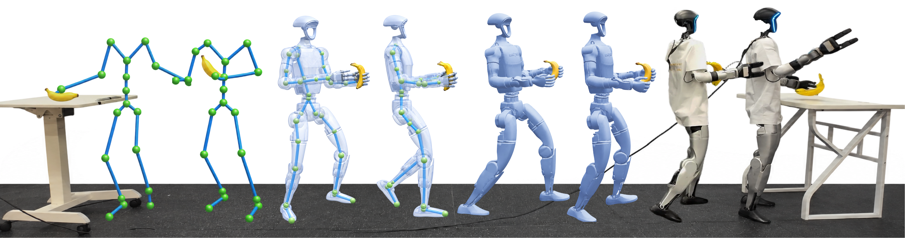
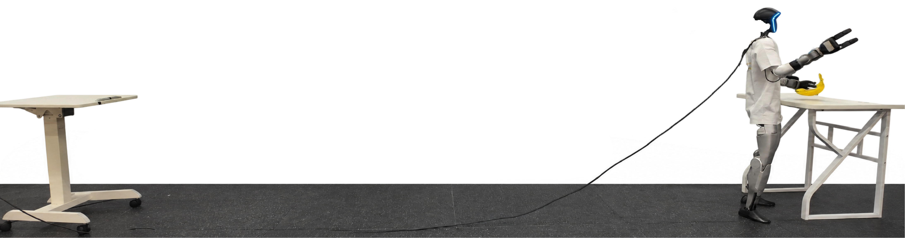
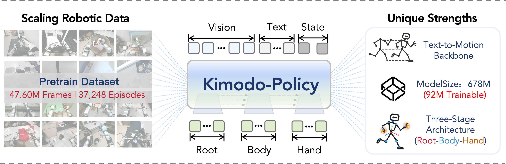
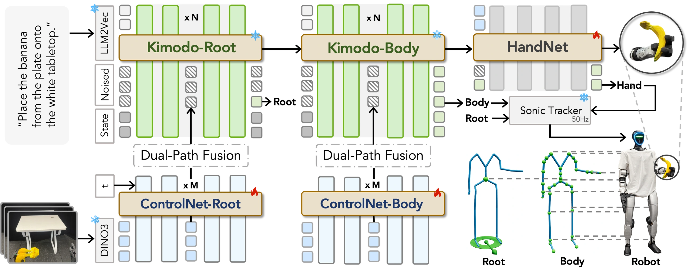
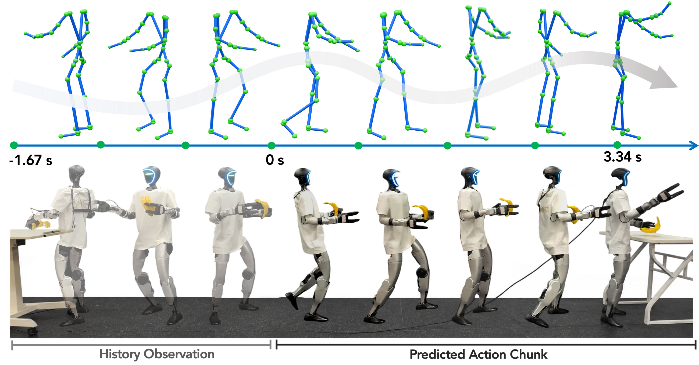
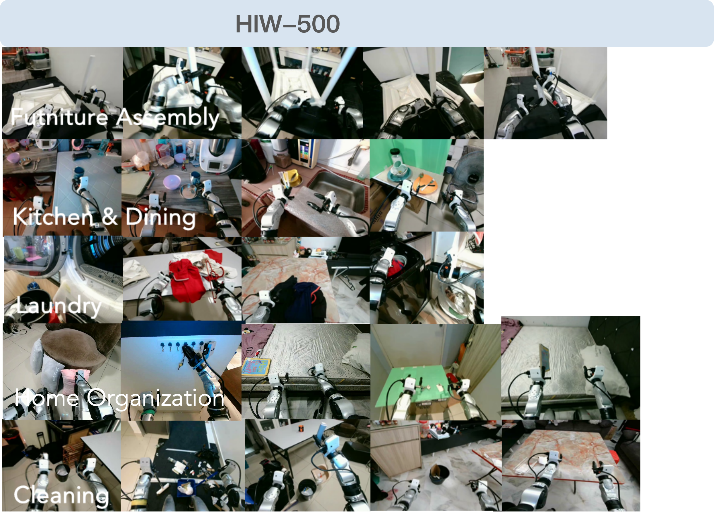
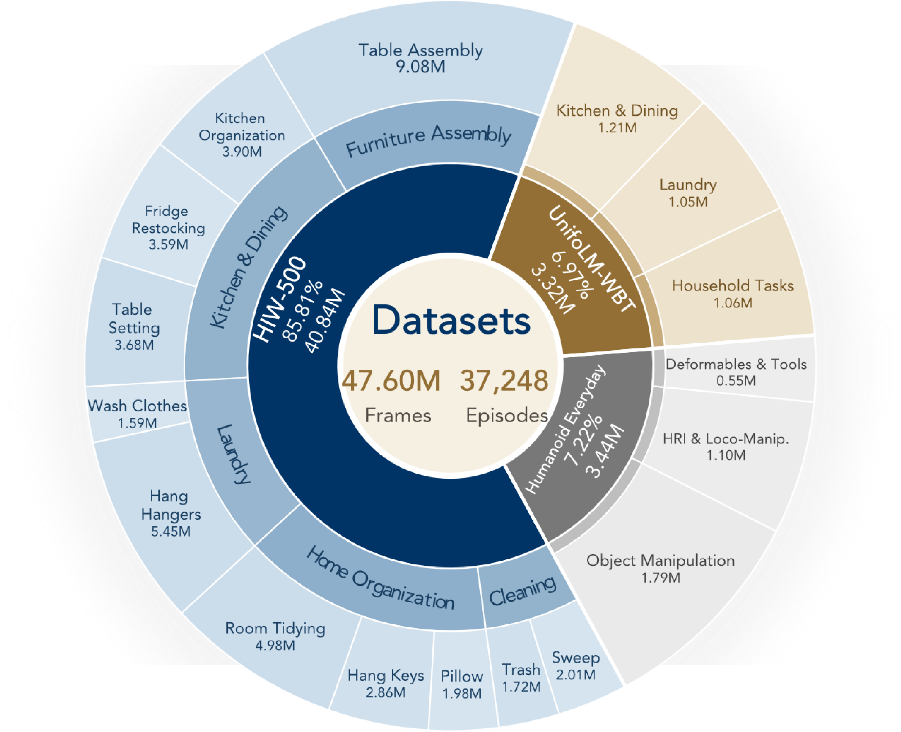
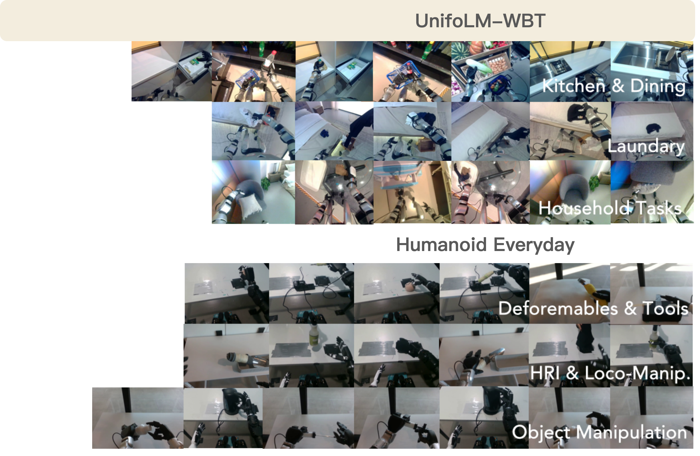
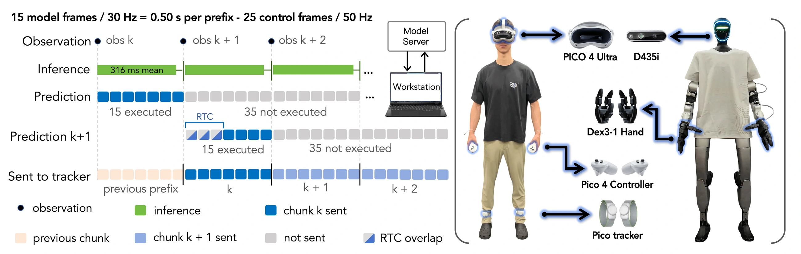

Seven tasks. Coordinated whole-body motion.
From motion generation to humanoid control



We introduce Kinematic Action Models (KAMs), a paradigm that makes whole-body motion a direct pretraining target and uses pretrained motion generators as the foundation for humanoid action learning. Kimodo-Policy instantiates this paradigm by preserving temporal and cross-body coordination priors in a frozen motion backbone and grounding them through lightweight visual conditioning and execution feedback. With 92M trainable parameters out of 678M, it achieves the highest overall success among the compared policies on multi-task HumanoidArena (72.14%), competitive performance on SIMPLE, and 60% mean success across eight real-world tasks, supporting motion generation as a complementary foundation for humanoid loco-manipulation.
A structured motion prior, grounded in the scene

Kimodo-Policy combines a frozen, language-conditioned Kimodo backbone with trainable visual ControlNet branches and a dedicated HandNet. A root–body–hand hierarchy first predicts global motion, then articulated body motion conditioned on the root trajectory, and finally bilateral hand commands conditioned on body features and visual context. Dual-Path Fusion integrates motion-query cross-attention with a mapping from spatial image tokens to the prediction horizon, grounding the inherited motion prior in egocentric observations. Detached inter-stage conditioning preserves forward coordination while separating gradient updates, allowing visual adaptation and hand control to be learned around the frozen motion generator.

The figure illustrates the transition from language-aligned motion synthesis to closed-loop interaction. At each policy query, observed motion history constrains the denoising process, while current visual observations guide the generation of a future action chunk. In the real-world configuration, each query uses up to 100 history frames and predicts 50 future frames at 30 Hz (about 1.67 s). A whole-body tracker executes a 15-frame prefix (0.5 s), and the resulting state history and updated image condition the next query. This receding-horizon formulation anchors new predictions to actual execution, preserving the inherited motion structure while enabling continual visual and state-based correction.
Performance
We evaluate task success and whole-body control on HumanoidArena, SIMPLE, and eight real-world tasks. Both Kimodo variants retain the pretrained T2M backbone; Kimodo-Policy* additionally initializes its visual branches and hand head from 419 hours of robot-interaction policy pretraining.
Success rate by task
0–100% · higher is bettersuccess rate
Compare policies
Select a policy to show or hide its trace.
Results, task by task
Kimodo-Policy and reported baselines
Datasets
Pretraining on diverse humanoid demonstrations
Our 419-hour robot-interaction policy pretraining corpus combines HIW-500, 14 task-specific G1 subsets from UniFoLM-WBT, and Humanoid Everyday. We select the UniFoLM-WBT subsets available when the corpus was assembled, including main-camera-only variants where available. Together, these sources cover household manipulation, articulated-object interaction, and locomotion-integrated behaviors.



Whole-body teleoperation and data collection
Built on and extended from the NVIDIA GR00T-WholeBodyControl teleoperation and data-recording system, our setup uses a PICO 4 Ultra headset and hand controllers with PICO body trackers to capture whole-body and lower-limb motion. The robot carries an Intel RealSense D435i camera and Dex3-1 dexterous hands. We collect 25–30 demonstrations per task across eight real-world tasks and store them in a LeRobot v2.1-compatible format with Kimodo-specific motion and control fields.

See coordinated whole-body behavior
Explore Kimodo-Policy in the real world, HumanoidArena, and Simple. These selected demonstrations show locomotion, whole-body coordination, and interaction across a range of tasks.
Citation
If you find Kimodo-Policy useful in your research, please cite our paper.
@misc{wang2026kimodopolicy,
title = {{Kimodo-Policy}: Learning Kinematic Action Models for Humanoid Loco-Manipulation},
author = {Wang, Yunheng and Zhang, Jiaxi and Lu, Wei and Fang, Yuetong and
Wang, Taowen and Feng, Yixiao and Zhang, Shuning and Xu, Junzhe and
Wang, Yichi and Yuan, Zizhao and Huang, Kailun and Li, Lusong and
Zhou, Mingqian and Zeng, Zecui and Xu, Renjing},
year = {2026},
eprint = {2611.11554},
archivePrefix = {arXiv},
primaryClass = {cs.RO},
doi = {10.48550/arXiv.2611.11554},
url = {https://arxiv.org/abs/2611.11554}
}